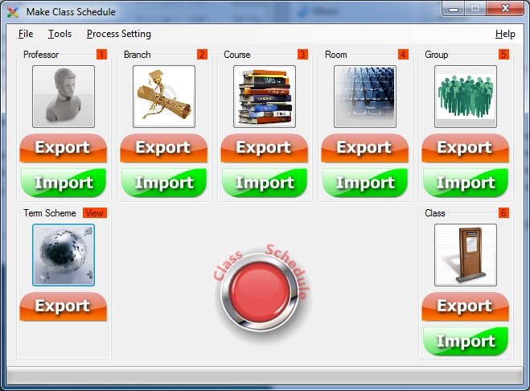

* The numbers (N) top of any part, indicate the priority of data entry. For example, first should there be a professor until class time allocated to him.
After the data enter all parts, will form the figure below.
* Enabled all Export buttons.